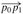
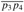

|
|
< Day Day Up > |
|
Several of the computational-geometry algorithms in this chapter will require answers to questions about the properties of line segments. A convex combination of two distinct points p1 = (x1, y1) and p2 = (x2, y2) is any point p3 = (x3, y3) such that for some α in the range 0 ≤ α ≤ 1, we have x3 = αx1 + (1 - α)x2 and y3 = αy1 + (1 - α)y2. We also write that p3 = αp1 + (1 - α)p2. Intuitively, p3 is any point that is on the line passing through p1 and p2 and is on or between p1 and p2 on the line. Given two distinct points p1 and p2, the line segment  is the set of convex combinations of p1 and p2. We call p1 and p2 the endpoints of segment
is the set of convex combinations of p1 and p2. We call p1 and p2 the endpoints of segment  . Sometimes the ordering of p1 and p2 matters, and we speak of the directed segment
. Sometimes the ordering of p1 and p2 matters, and we speak of the directed segment  . If p1 is the origin (0, 0), then we can treat the directed segment as the vector p2.
. If p1 is the origin (0, 0), then we can treat the directed segment as the vector p2.
In this section, we shall explore the following questions:
Given two directed segments and , is clockwise from with respect to their common endpoint p0?
Given two line segments and , if we traverse and then , do we make a left turn at point p1?
Do line segments and intersect?
There are no restrictions on the given points.
We can answer each question in O(1) time, which should come as no surprise since the input size of each question is O(1). Moreover, our methods will use only additions, subtractions, multiplications, and comparisons. We need neither division nor trigonometric functions, both of which can be computationally expensive and prone to problems with round-off error. For example, the "straightforward" method of determining whether two segments intersect-compute the line equation of the form y = mx + b for each segment (m is the slope and b is the y-intercept), find the point of intersection of the lines, and check whether this point is on both segments-uses division to find the point of intersection. When the segments are nearly parallel, this method is very sensitive to the precision of the division operation on real computers. The method in this section, which avoids division, is much more accurate.
Computing cross products is at the heart of our line-segment methods. Consider vectors p1 and p2, shown in Figure 33.1(a). The cross product p1 × p2 can be interpreted as the signed area of the parallelogram formed by the points (0, 0), p1, p2, and p1 + p2 = (x1 + x2, y1 + y2). An equivalent, but more useful, definition gives the cross product as the determinant of a matrix:[1]
If p1 × p2 is positive, then p1 is clockwise from p2 with respect to the origin (0, 0); if this cross product is negative, then p1 is counterclockwise from p2. (See Exercise 33.1-1.) Figure 33.1(b) shows the clockwise and counterclockwise regions relative to a vector p. A boundary condition arises if the cross product is 0; in this case, the vectors are collinear, pointing in either the same or opposite directions.
To determine whether a directed segment is clockwise from a directed segment with respect to their common endpoint p0, we simply translate to use p0 as the origin. That is, we let p1 - p0 denote the vector , where and , and we define p2 - p0 similarly. We then compute the cross product
(p1 - p0) × (p2 - p0) = (x1 - x0)(y2 - y0) - (x2 - x0)(y1 - y0).
If this cross product is positive, then is clockwise from ; if negative, it is counterclockwise.
Our next question is whether two consecutive line segments and turn left or right at point p1. Equivalently, we want a method to determine which way a given angle ∠ p0p1p2 turns. Cross products allow us to answer this question without computing the angle. As shown in Figure 33.2, we simply check whether directed segment is clockwise or counterclockwise relative to directed segment . To do this, we compute the cross product (p2 - p0) × (p1 - p0). If the sign of this cross product is negative, then is counterclockwise with respect to , and thus we make a left turn at p1. A positive cross product indicates a clockwise orientation and a right turn. A cross product of 0 means that points p0, p1, and p2 are collinear.
To determine whether two line segments intersect, we check whether each segment straddles the line containing the other. A segment straddles a line if point p1 lies on one side of the line and point p2 lies on the other side. A boundary case arises if p1 or p2 lies directly on the line. Two line segments intersect if and only if either (or both) of the following conditions holds:
Each segment straddles the line containing the other.
An endpoint of one segment lies on the other segment. (This condition comes from the boundary case.)
The following procedures implement this idea. SEGMENTS-INTERSECT returns TRUE if segments and intersect and FALSE if they do not. It calls the subroutines DIRECTION, which computes relative orientations using the cross-product method above, and ON-SEGMENT, which determines whether a point known to be collinear with a segment lies on that segment.
SEGMENTS-INTERSECT(p1, p2, p3, p4) 1 d1 ← DIRECTION(p3, p4, p1) 2 d2 ← DIRECTION(p3, p4, p2) 3 d3 ← DIRECTION(p1, p2, p3) 4 d4 ← DIRECTION(p1, p2, p4) 5 if ((d1 > 0 and d2 < 0) or (d1 < 0 and d2 > 0)) and ((d3 > 0 and d4 < 0) or (d3 < 0 and d4 > 0)) 6 then return TRUE 7 elseif d1 = 0 and ON-SEGMENT(p3, p4, p1) 8 then return TRUE 9 elseif d2 = 0 and ON-SEGMENT(p3, p4, p2) 10 then return TRUE 11 elseif d3 = 0 and ON-SEGMENT(p1, p2, p3) 12 then return TRUE 13 elseif d4 = 0 and ON-SEGMENT(p1, p2, p4) 14 then return TRUE 15 else return FALSE
DIRECTION(pi, pj, pk)
1 return (pk - pi) × (pj - pi)
ON-SEGMENT(pi, pj, pk) 1 if min(xi, xj) ≤ xk ≤ max(xi, xj) and min(yi, yj) ≤ yk ≤ max(yi, yj) 2 then return TRUE 3 else return FALSE
SEGMENTS-INTERSECT works as follows. Lines 1-4 compute the relative orientation di of each endpoint pi with respect to the other segment. If all the relative orientations are nonzero, then we can easily determine whether segments and  intersect, as follows. Segment straddles the line containing segment if directed segments and have opposite orientations relative to . In this case, the signs of d1 and d2 differ. Similarly, straddles the line containing if the signs of d3 and d4 differ. If the test of line 5 is true, then the segments straddle each other, and SEGMENTS-INTERSECT returns TRUE. Figure 33.3(a) shows this case. Otherwise, the segments do not straddle each other's lines, although a boundary case may apply. If all the relative orientations are nonzero, no boundary case applies. All the tests against 0 in lines 7-13 then fail, and SEGMENTS-INTERSECT returns FALSE in line 15. Figure 33.3(b) shows this case.

A boundary case occurs if any relative orientation dk is 0. Here, we know that pk is collinear with the other segment. It is directly on the other segment if and only if it is between the endpoints of the other segment. The procedure ON-SEGMENT returns whether pk is between the endpoints of segment , which will be the other segment when called in lines 7-13; the procedure assumes that pk is collinear with segment . Figures 33.3(c) and (d) show cases with collinear points. In Figure 33.3(c), p3 is on , and so SEGMENTS-INTERSECT returns TRUE in line 12. No endpoints are on other segments in Figure 33.3(d), and so SEGMENTS-INTERSECT returns FALSE in line 15.
Later sections of this chapter will introduce additional uses for cross products. In Section 33.3, we shall need to sort a set of points according to their polar angles with respect to a given origin. As Exercise 33.1-3 asks you to show, cross products can be used to perform the comparisons in the sorting procedure. In Section 33.2, we shall use red-black trees to maintain the vertical ordering of a set of line segments. Rather than keeping explicit key values, we shall replace each key comparison in the red-black tree code by a cross-product calculation to determine which of two segments that intersect a given vertical line is above the other.
Prove that if p1 × p2 is positive, then vector p1 is clockwise from vector p2 with respect to the origin (0, 0) and that if this cross product is negative, then p1 is counterclockwise from p2.
Professor Powell proposes that only the x-dimension needs to be tested in line 1 of ON-SEGMENT. Show why the professor is wrong.
The polar angle of a point p1 with respect to an origin point p0 is the angle of the vector p1 - p0 in the usual polar coordinate system. For example, the polar angle of (3, 5) with respect to (2, 4) is the angle of the vector (1, 1), which is 45 degrees or π/4 radians. The polar angle of (3, 3) with respect to (2, 4) is the angle of the vector (1, -1), which is 315 degrees or 7π/4 radians. Write pseudocode to sort a sequence 〈p1, p2, ..., pn〉 of n points according to their polar angles with respect to a given origin point p0. Your procedure should take O(n lg n) time and use cross products to compare angles.
Show how to determine in O(n2 lg n) time whether any three points in a set of n points are collinear.
A polygon is a piecewise-linear, closed curve in the plane. That is, it is a curve ending on itself that is formed by a sequence of straight-line segments, called the sides of the polygon. A point joining two consecutive sides is called a vertex of the polygon. If the polygon is simple, as we shall generally assume, it does not cross itself. The set of points in the plane enclosed by a simple polygon forms the interior of the polygon, the set of points on the polygon itself forms its boundary, and the set of points surrounding the polygon forms its exterior. A simple polygon is convex if, given any two points on its boundary or in its interior, all points on the line segment drawn between them are contained in the polygon's boundary or interior.
Professor Amundsen proposes the following method to determine whether a sequence 〈p0, p1, ..., pn-1〉 of n points forms the consecutive vertices of a convex polygon. Output "yes" if the set {∠ pi pi+1 pi+2 : i = 0, 1, ..., n - 1}, where subscript addition is performed modulo n, does not contain both left turns and right turns; otherwise, output "no." Show that although this method runs in linear time, it does not always produce the correct answer. Modify the professor's method so that it always produces the correct answer in linear time.
Given a point p0 = (x0, y0), the right horizontal ray from p0 is the set of points {pi = (xi, yi) : xi ≥ x0 and yi = y0}, that is, it is the set of points due right of p0 along with p0 itself. Show how to determine whether a given right horizontal ray from p0 intersects a line segment  in O(1) time by reducing the problem to that of determining whether two line segments intersect.
in O(1) time by reducing the problem to that of determining whether two line segments intersect.
One way to determine whether a point p0 is in the interior of a simple, but not necessarily convex, polygon P is to look at any ray from p0 and check that the ray intersects the boundary of P an odd number of times but that p0 itself is not on the boundary of P. Show how to compute in Θ(n) time whether a point p0 is in the interior of an n-vertex polygon P. (Hint: Use Exercise 33.1-6. Make sure your algorithm is correct when the ray intersects the polygon boundary at a vertex and when the ray overlaps a side of the polygon.)
Show how to compute the area of an n-vertex simple, but not necessarily convex, polygon in Θ(n) time. (See Exercise 33.1-5 for definitions pertaining to polygons.)
[1]Actually, the cross product is a three-dimensional concept. It is a vector that is perpendicular to both p1 and p2 according to the "right-hand rule" and whose magnitude is |x1 y2 - x2 y1|. In this chapter, however, it will prove convenient to treat the cross product simply as the value x1 y2 - x2 y1.
|
|
< Day Day Up > |
|